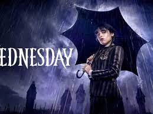
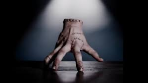

 


<p>Зрителям очень понравился Вещь. Одни из самых смешных и милых сцен шоу были именно с этим очаровательным героем. Многим фанатам стало интересно, как же команда снимала сцены с живой кистью руки. И Netflix раскрыл удивительный процесс создания эпизодов с Вещью. Фото выложили в Twitter сервиса.
Сыграл Вещь румынский фокусник Виктор Доробанту. На съемочной площадке Доробанту находился в специальном синем костюме, чтобы при монтаже создатели оставили в кадре только его кисть. Прежде Доробанту не снимался в кино – роль Вещи стала первой в его актерской карьере. До съемок в «Уэнсдэй» Доробанту работал фокусником на публичных мероприятиях и в телевизионных шоу в Румынии.
</p>